Session cloud « masque-fumée », 27/09/2026. Torches éteintes, la fusée seule, caméra posée, LED figées : A sans fumée,
puis la même fumée sans masque, avec le masque de Gadgets, avec chaque forme. Noir sali : en rouge, les pixels noirs
sans fumée qu'elle allume ; en gris clair, le sol éclairé. Écart : en magenta, les pixels qui diffèrent du masque de
Gadgets (au pied de J1, le corps frémit d'une prise à l'autre : deux prises de Gadgets y diffèrent autant). Rendu logiciel du
cloud : vaut pour le noir et les comptes, pas pour la cadence.
45° B
Fumée sans masque (le jeu par défaut)
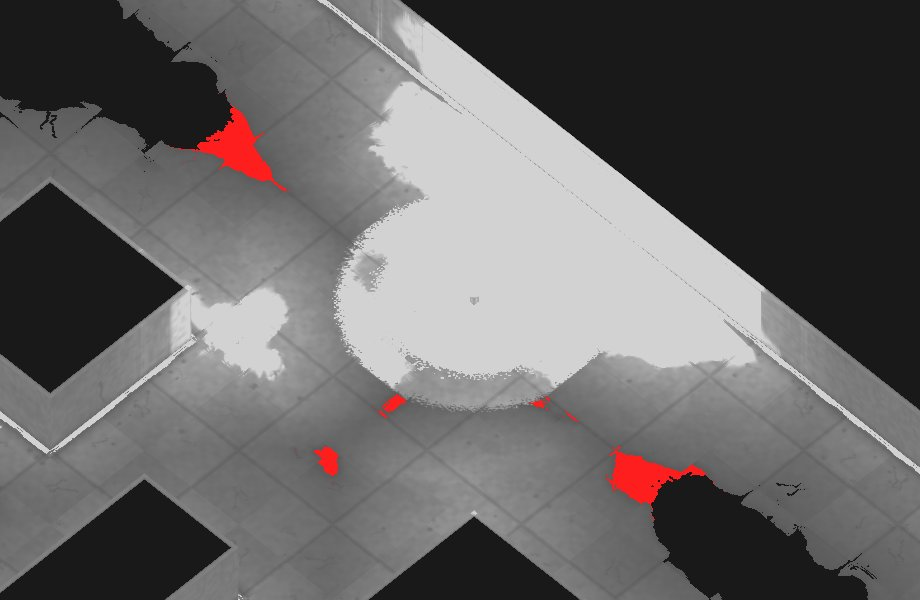
noir sali : 5592 pixels rouges
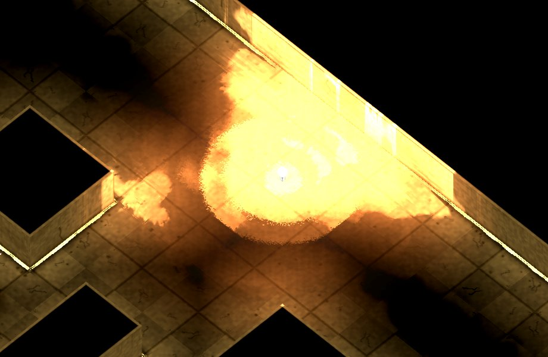
l'image (gain ×3)
Masque de Gadgets (--fumee-masque)
noir sali : 0 pixels rougesl'image (gain ×3)
Forme compacte (--fumee-masque-compact)
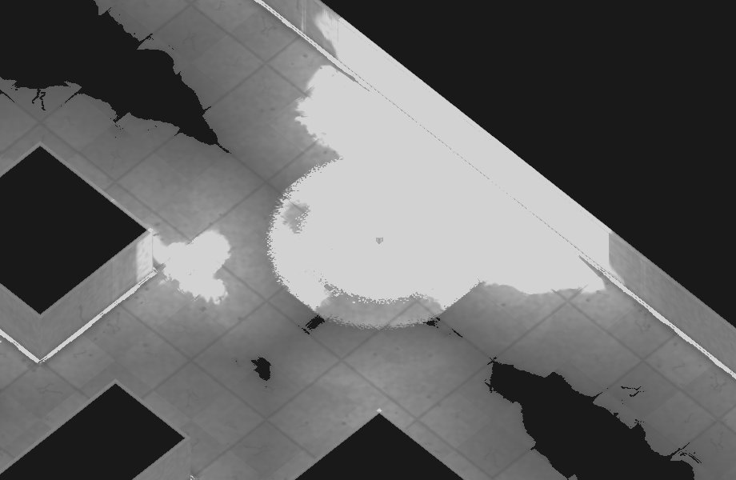
noir sali : 0 pixels rougesl'image (gain ×3)écart au masque de Gadgets : 0 pixels (magenta)
Bande resserrée (--fumee-masque-resserre)
noir sali : 0 pixels rouges
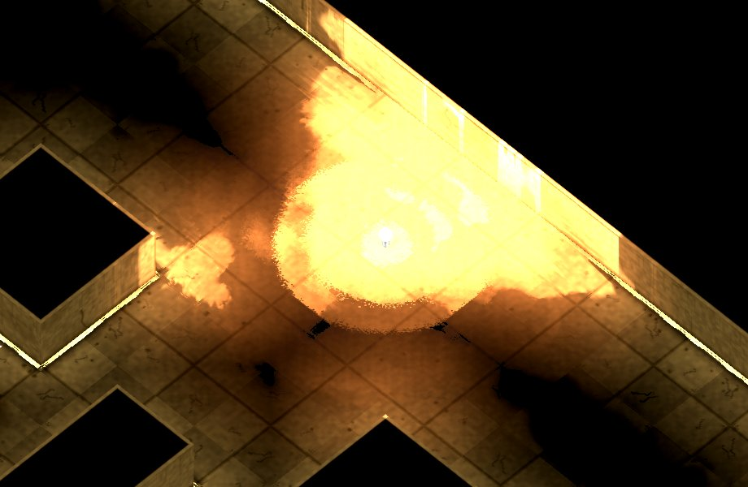
l'image (gain ×3)écart au masque de Gadgets : 0 pixels (magenta)
Pochoir (--fumee-masque-pochoir)
noir sali : 0 pixels rougesl'image (gain ×3)
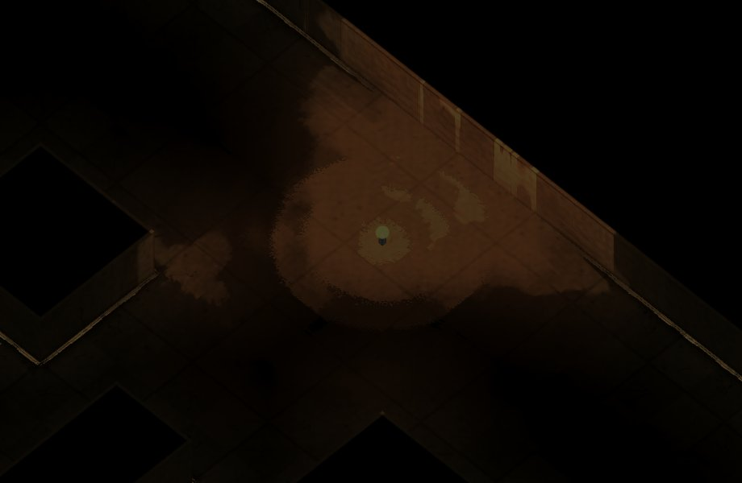
écart au masque de Gadgets : 0 pixels (magenta)
Écran scindé, fumée sans masque (J1 à gauche, J2 à droite)
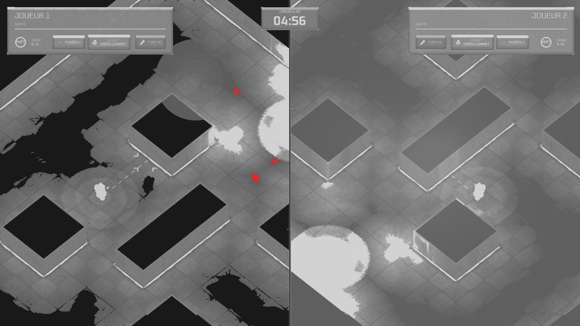
noir sali : 889 pixels rouges
Écran scindé, pochoir (J1 à gauche, J2 à droite)
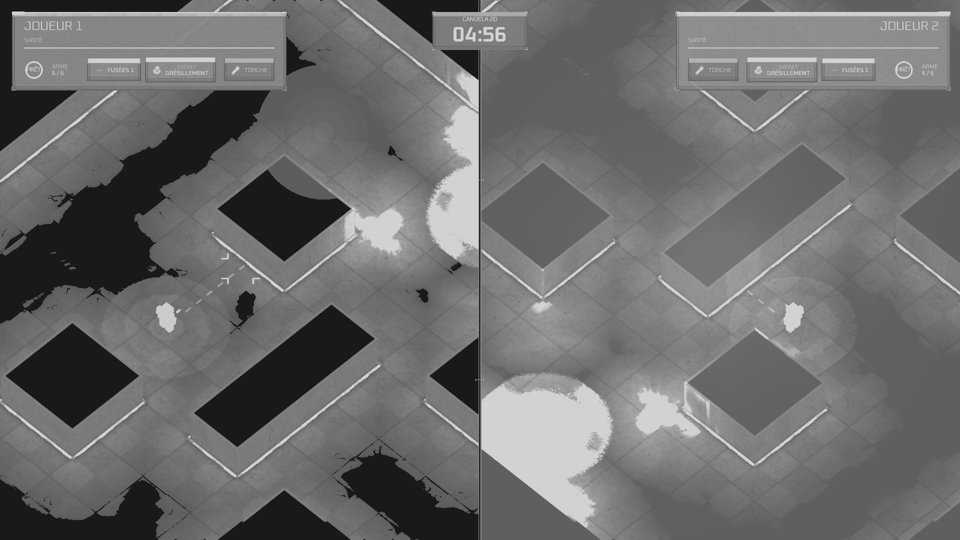
noir sali : 10 pixels rouges
0° A
Fumée sans masque (le jeu par défaut)
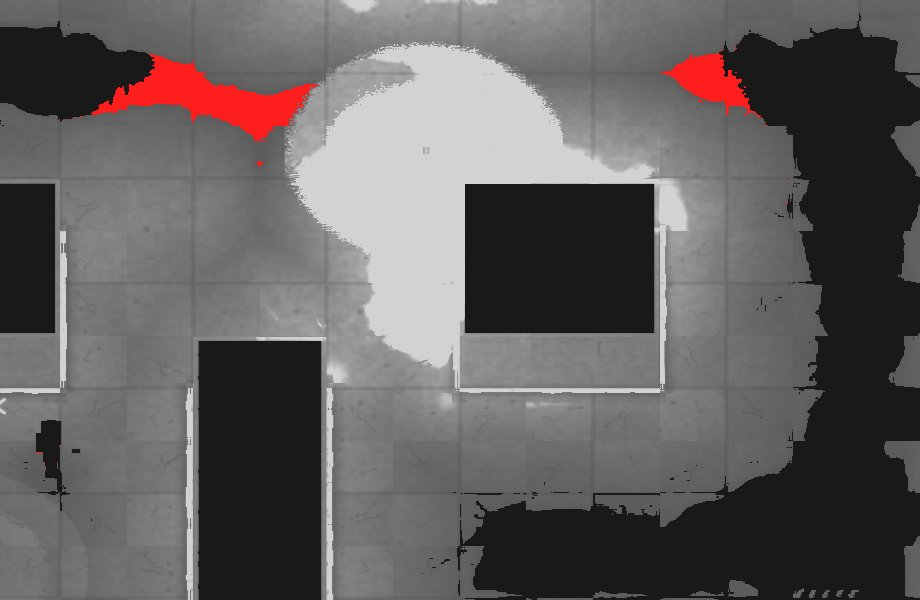
noir sali : 9745 pixels rouges
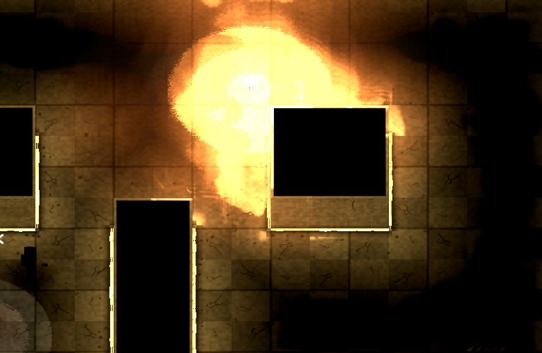
l'image (gain ×3)
Masque de Gadgets (--fumee-masque)
noir sali : 1 pixels rougesl'image (gain ×3)
Forme compacte (--fumee-masque-compact)
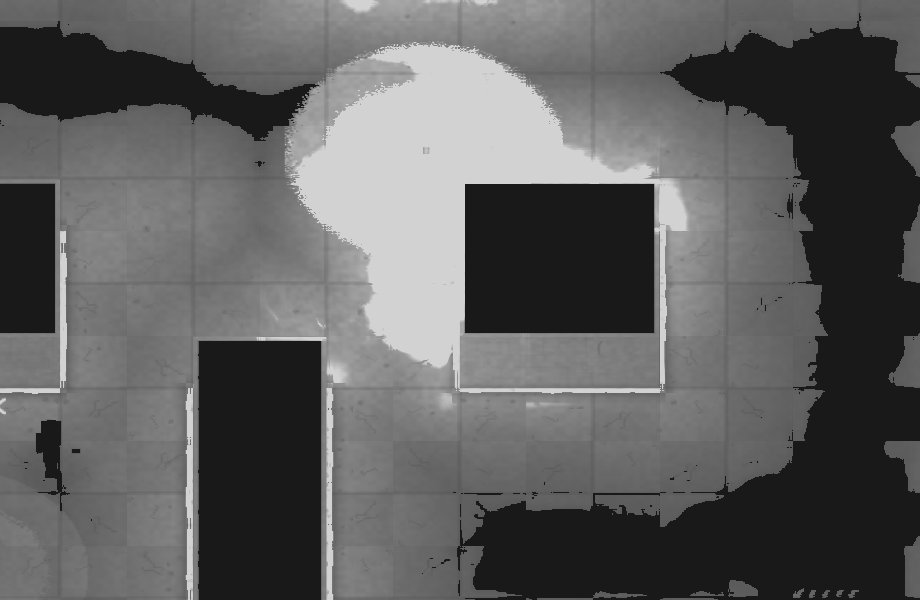
noir sali : 0 pixels rouges
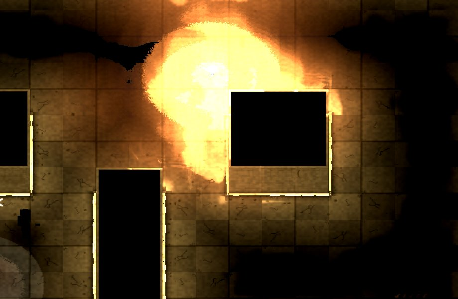
l'image (gain ×3)
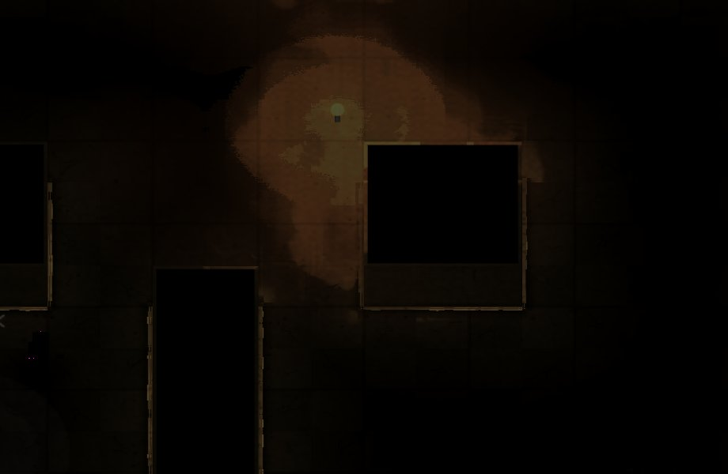
écart au masque de Gadgets : 4 pixels (magenta)
Bande resserrée (--fumee-masque-resserre)
noir sali : 9 pixels rougesl'image (gain ×3)écart au masque de Gadgets : 70 pixels (magenta)
Pochoir (--fumee-masque-pochoir)
noir sali : 10 pixels rougesl'image (gain ×3)écart au masque de Gadgets : 146 pixels (magenta)
Écran scindé, fumée sans masque (J1 à gauche, J2 à droite)